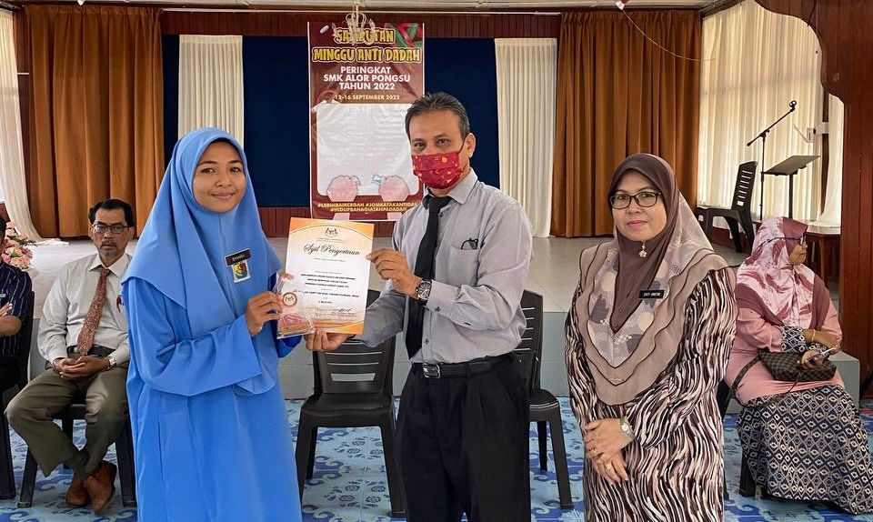
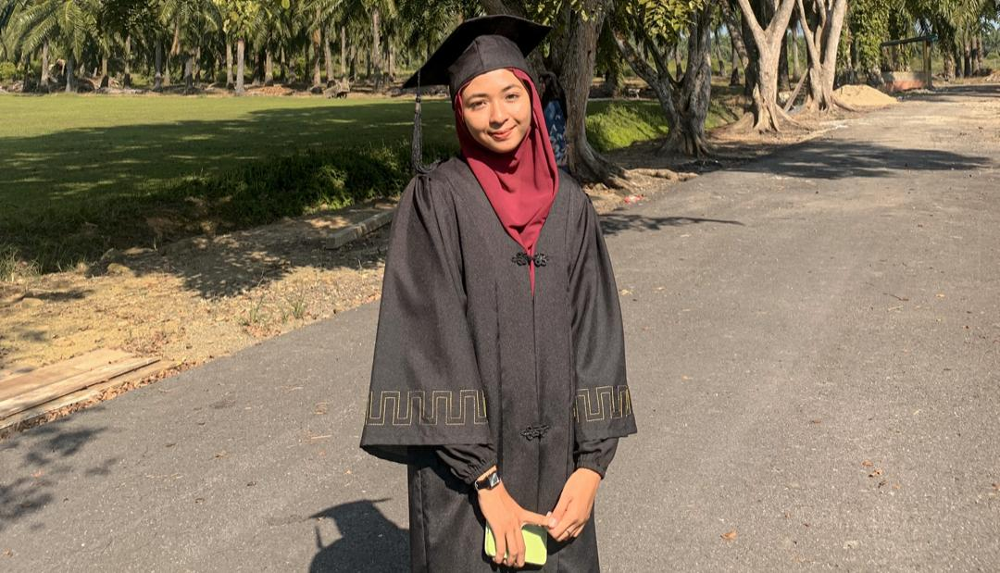
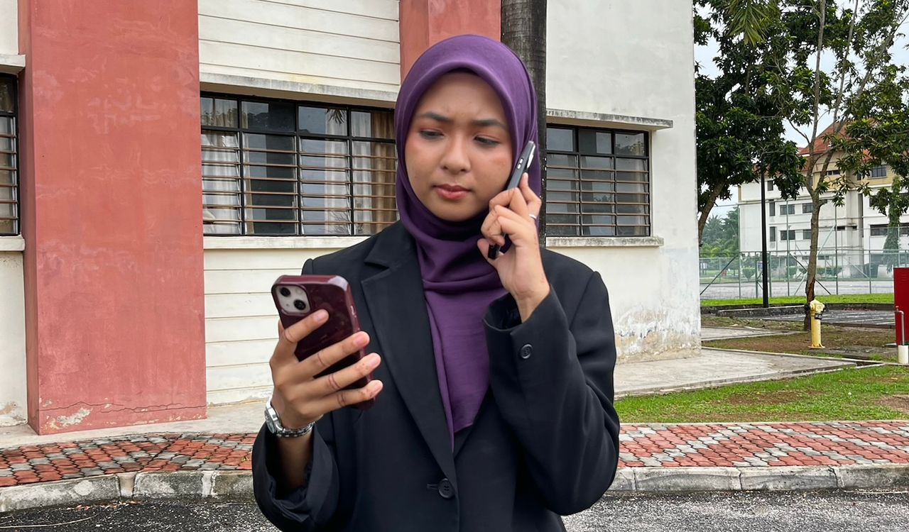
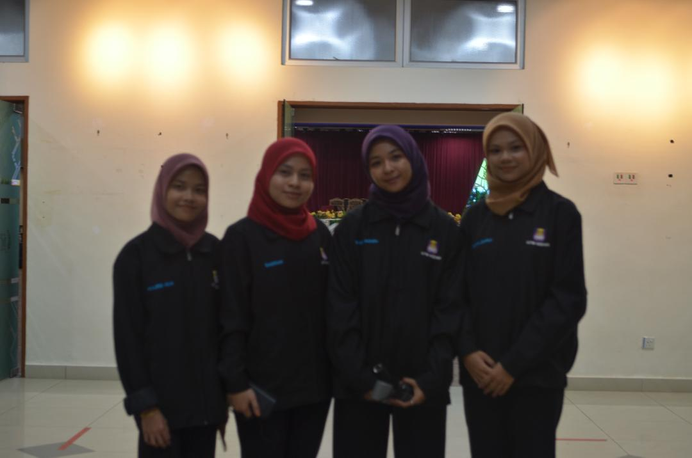
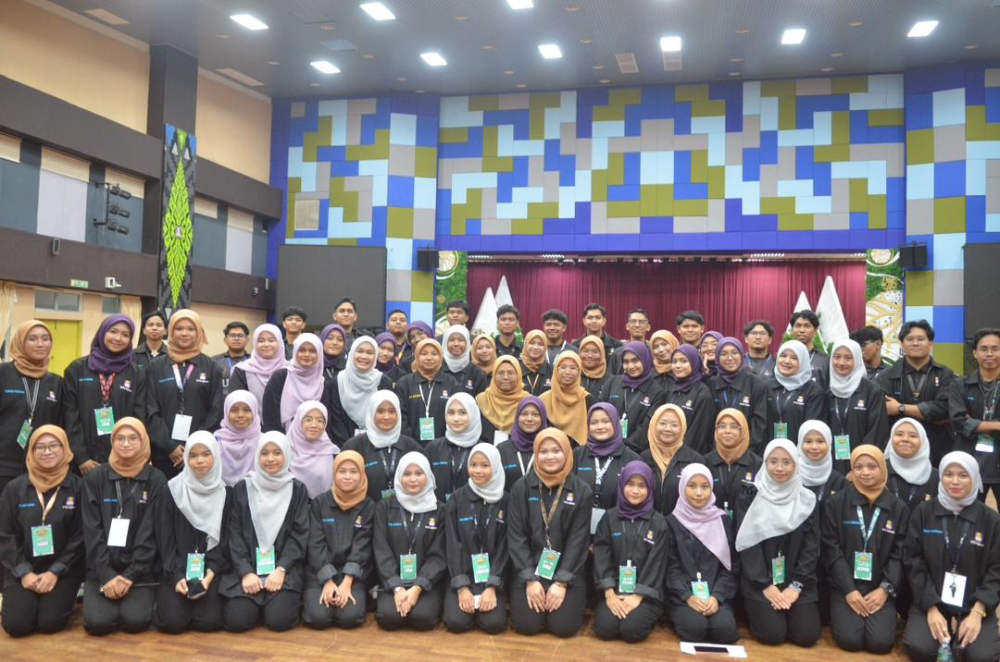

📌 HighSchool Experience

Becoming a prefect is my first way in gaining experience in enhancing skills

when i was 14, i challenged myself to get out from comfort zone and try to work with seniors.

Challenging myself in joining a Kadet Remaja Sekolah and received my Pegawai Waran II title at the end of my school era

After having long covid break, i finally did a comeback in joining theather

receive an offer to become an emcee for spelling bee competition

Joining Drama Komsas Bahasa Melayu as a Supervisor

Alhamdulillah, end my school era with good SPM results.
📌 University Experience
After 3 semesters, i joined Jawatankuasa Perwakilan Kolej by carrying role as Exco Aduan dan Kebajikan

The team i work with through out 1 year

my first program as Director. Together in the picture is my team who help me through out the program process. thx!

First time taking role in protocol team